[CAS_CTR] 多级控制器
功能块 CAS__CTR 是一个 PI 主控制器，用于房间送风的级联控制。
CAS_CTR 是一个 PI 主控制器，用于房间送风的级联控制。
CAS_CTR 提供上部和下部送风设定值。此外，能量回收的供气设定点取决于其控制作用的方向。
CAS__CTR 可用于温度或湿度串级控制。
Cascade control
送风设定值 [SpLoSu]、[SpHiSu] 和 [SpErcSu] 计算如下：
- The reference controller is switched by the inputs [EnFnct] and [OoServ] (operating modes).
- The lower and upper supply air setpoint [SpLoSu], [SpHiSu] are controlled by the controlled variable [XctrR] (upper, lower supply air setpoints).
- The control action of energy recovery [ActgErc] determines the supply air setpoint for energy recovery [SpErcSu] (supply air setpoint for energy recovery).
Operating modes
Condition | Result | ||
|---|---|---|---|
EnFnct | OoServ | CtrSta |
|
|
0 | 0 | 1 (CtrOff) | 控制器已关闭。 |
1 | 0 | 3 (CtrOn) | 控制器已打开。 |
0 | 1 | 2 (CtrCmd) | 控制器已关闭。输出处提供默认值 [DefVal]。 |
Upper, lower supply air setpoints
CAS_CTR 块用作房间送风级联控制的参考控制器。参考控制器将外控制环的控制变量[XctrR]控制为区间值[SpLoR]、[SpHiR]。为此，参考控制器 CAS__CTR 确定由内部控制环控制的三个设定点 [SpLoSu]、[SpErcSu] 和 [SpHiSu]。
将内部控制环路的受控变量 [XctrSu] 控制为 CAS_CTR 块提供的设定值的顺序控制器是内部控制环路的一部分（[CTR] Controller).
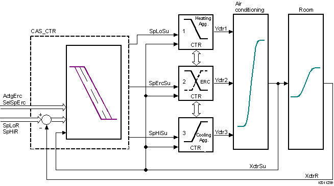
上部和下部送风设定值的计算取决于运行模式和受控变量 [XctrR]。
Condition | Result | |
|---|---|---|
EnFnct | OoServ | |
|
0 | 1 | 参考控制器关闭。 默认值 [SpCmdSu] 在输出 [SpLoSu]、[SpHiSu] 和 [SpErcSu] 处可用。 [CtrSta] = 2 (CtrCmd) |
0 | 0 | 参考控制器关闭。 [CtrSta] = 1 (CtrOff) |
1 | 0 | 参考控制器根据相应的房间设定点 [SpLoR]、[SpHiR] 和房间的受控变量 [XctrR] 计算下送风设定点 [SpLoSu] 和上送风设定点 [SpHiSu]。 [CtrSta] = 3 (CtrOn) |
计算出的送风设定值受 [SpMinSu] 和 [SpMaxSu] 限制。 [CtrSta] = 4 (CtrMin) 或 5 (CtrMax) | ||
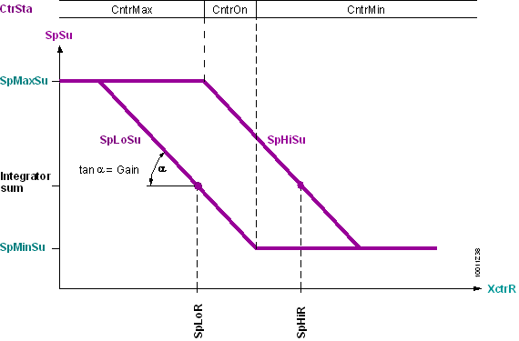
Supply air setpoint for energy recovery.
用于能量回收的送风设定点 [SpErcSu] 的计算取决于运行模式、用于能量回收的设定点选择 [SelSpErc]，以及用于能量回收的控制操作的当前方向 [ActgErc]。
OoServ | SelSpErc |
| |
|---|---|---|---|
|
1 |
| 能量回收的供气设定值 [SpErcSu] 等于 [DefVal]。 | |
0 | 1 | 用于能量回收的送风设定点 [SpErcSu] 对应于下送风设定点和上送风设定点的平均值。 [SpErcSu] = Average [SpLoSu], [SpHiSu] | |
0 | 能量回收的供气设定点 [SpErcSu] 取决于控制操作 [ActgErc] 的当前方向。 | ||
ActgErg = 0 (direct) | 送风设定点冷却[SpErcSu] = [SpHiSu] | ||
ActgErc = 1 (inverted) | 供气设定点加热[SpErcSu] = [SpLoSu] | ||
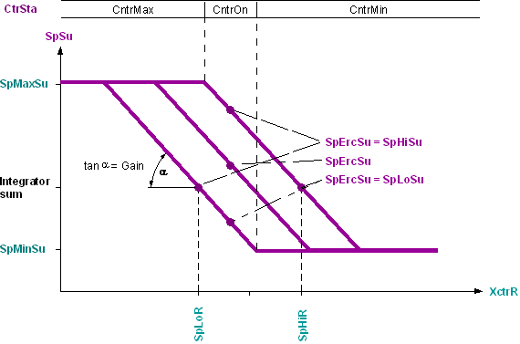
Integration in sequence control
CAS_CTR 可通过连接引脚 [ToLower] 和 [FmHigher] 以及 [FmLower] 和 [ToHigher] 集成到顺序控制中。可以直接或通过SEQLINK。顺序控制中CAS_CTR的集成对应于PID顺序控制器的集成，此处对其进行了详细描述。
下图显示了通风系统的控制。当最小时空气体积流量增加。或最大。达到供气设定值。
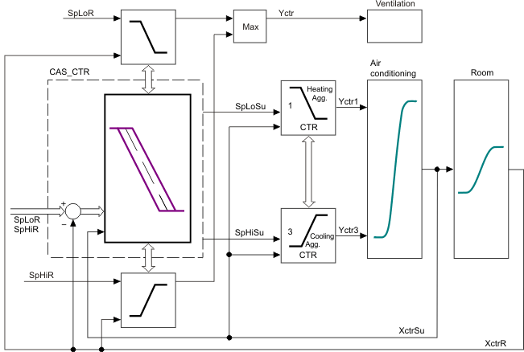
输入 | 描述 | 数据类型 | 默认值 |
|---|---|---|---|
EnFnct | Enable function 启用该功能。 | 布尔值 | 1 |
0 - 该功能被禁用。 | |||
OoServ | Out of service 命令控制器输出。 | 布尔值 | 0 |
0 - 无命令。 | |||
DefVal | Default value 默认送风设定值 如果 [OoServ] = True，则为 [SpLoSu]、[SpHiSu] 和 [SpErcSu] 的默认值。 | 真实的 | 20.0 [°C] -50.0…150.0 [°C] |
SpHiR | Setpoint high: Room 室温（制冷）或房间湿度（除湿）的设定值。 | 真实的 | 21.0 [°C] 0.0…100.0 [°C] |
SpLoR | Setpoint low: Room 室温（加热）或房间湿度（加湿）的设定值。 | 真实的 | 20.0 [°C] 0.0…100.0 [°C] |
XctrR | Controller input for room 室温或室内湿度的测量值。 | 真实的 | 0.0 [°C] 0.0…100.0 [°C] |
XctrSu | Controller input for supply air 送风或送风湿度的测量值 输入必须互连才能得到 PI 响应。 For P-response, [XctrSu] is not required. | 真实的 | 0.0 [°C] 0.0…100.0 [°C] |
ActgErc | Control action for energy recovery | 布尔值 | 1 |
0 - Direct- 冷却或除湿时发生能量回收。 | |||
Gain | Gain | 真实的 | 10.0 [°C /°F] 0.0…100.0 [°C /°F] |
Tn | Integral action time Tn | 时间 | 2m |
0ms：串级控制器有P控制响应。 | |||
SpMaxSu | Maximum supply air setpoint | 真实的 | 32.0 [°C] -50.0…150.0 [°C] |
SpMinSu | Minimum supply air setpoint | 真实的 | 15.0 [°C] -50.0…150.0 [°C] |
SelSpErc | Selection of energy recovery setpoint 请参阅能量回收的送风设定值。 | 布尔值 | 0 |
0 - Edge（能量回收的供气设定点 [SpErcSu] 取决于控制操作的当前方向 [ActgErc]）。 | |||
EnIntini | Enable integrator initialization | 布尔值 | 0 |
0 - 内部计算的起始值在启动时有效。 | |||
IntgInit | Integrator initialization 特殊应用的积分器初始化。工程：积分器初始化。 | 真实的 | 0.0 [°C] 0.0…100.0 [°C] |
FmHigher | From higher neighbor element | 结构 | - |
FmHigher | Control mode | 整数 | 1：无 |
1: Nil - Not connected（默认值）。 | |||
FmHigher | Sequence coordination | 整数 | 1：无 |
1: Nil - Not connected（默认值）。 | |||
FmHigher | Control token | 整数 | 1：无 |
1: Nil - Not connected（默认值）。 | |||
FmHigher | Is integrator | 布尔值 | 0 |
0 - 序列元素具有非集成行为（默认）。 | |||
FmHigher | Covered error 由控制器的比例部分覆盖的误差。 | 真实的 | 0.0 |
FmLower | From lower neighbor element | 结构 | - |
FmLower | Control mode | 整数 | 1：无 |
1: Nil - Not connected（默认值）。 | |||
FmLower | Sequence coordination CTR 协调信号。 | 整数 | 1：无 |
1: Nil - Not connected（默认值）。 | |||
FmLower | Control token | 整数 | 1：无 |
1: Nil - Not connected（默认值）。 | |||
FmLower | Is integrator. | 布尔值 | 0 |
0 - 序列元素具有非集成行为（默认）。 | |||
FmLower | Covered error 由控制器的比例部分覆盖的误差。 | 真实的 | 0.0 |
输出 | 描述 | 数据类型 | 默认值 |
|---|---|---|---|
ErSta | Error state | 布尔值 | 0 |
0 - 没有错误，[TknSta] 不是 HEL_CSEQ 也不是 CEL_HSEQ 也不是 RT_FAULT。 | |||
CtrSta | Controller state | 整数 | 1: CtrOff |
1: CtrOff- 控制器关闭。 | |||
TknSta | Token state | 整数 | 1: NoTkn NoTkn…RTFault |
1: NoTkn - No token. | |||
SpHiSu | Setpoint high: Supply air 送风温度（冷却）或送风湿度（除湿）的设定值可用（控制动作的直接方向）。 | 真实的 | 26.0 [°C] -50.0…150.0 [°C] |
SpErcSu | Supply air setpoint for energy recovery 能量回收设定点可用。 | 真实的 | 23.0 [°C] -50.0…150.0 [°C] |
SpLoSu | Setpoint low: Supply air 送风温度（加热）或送风湿度（加湿）的设定值可用（控制作用的间接方向）。 | 真实的 | 20.0 [°C] -50.0…150.0 [°C] |
ToHigher | To higher neighbor element | 结构 | - |
ToHigher | Control mode | 整数 | 1：无 |
1: Nil - Not connected（默认值）。 | |||
ToHigher | Sequence coordination | 整数 | 1：无 |
1: Nil - Not connected（默认值）。 | |||
ToHigher | Control token | 整数 | 1：无 |
1: Nil - Not connected（默认值）。 | |||
ToHigher | Is integrator | 布尔值 | 0 |
0 - 序列元素具有非集成行为（默认）。 | |||
ToHigher | Covered error 由控制器的比例部分覆盖的误差。 | 真实的 | 0.0 |
ToLower | To higher neighbor element | 结构 | - |
ToLower | Control mode | 整数 | 1：无 |
1: Nil - Not connected（默认值）。 | |||
ToLower | Sequence coordination | 整数 | 1：无 |
1: Nil - Not connected（默认值）。 | |||
ToLower | Control token | 整数 | 1：无 |
1: Nil - Not connected（默认值）。 | |||
ToLower | Is integrator | 布尔值 | 0 |
0 - 序列元素具有非集成行为（默认）。 | |||
ToLower | Covered error 由控制器的比例部分覆盖的误差。 | 真实的 | 0.0 |
Temperature or humidity control
参考控制器用于温度和湿度控制。将其用作湿度控制的参考控制器时，请更改以下设置：
- Change the pin unit with dependence 1 from °C to g/kg.
- Change the pin unit with dependence 1 from °F to lb/lbda.
- Change the pin unit with dependence 2 from °C to %rh.
- Change the pin unit with dependence 2 from °F to %rh.
- Adjust the default values for the following pins.
Connecting thread | Unit | Default value |
DefVal | g/kg | 5 |
Lb/lbda | 0.005 | |
SpHiR | %r.h。 | 60 |
SpLoR | %r.h。 | 30 |
XctrR | %r.h。 | 0.0 |
XctrSu | %r.h。 | 0.0 |
获得。 | (g/kg)/(%rh) | 1 |
(lb/lbda)/(%rh) | 0.001 | |
Tn | 时间 | 10 |
SpMaxSu | g/kg | 10.5 |
lb/lbda | 0.011 | |
SpMinSu | g/kg | 4.5 |
lb/lbda | 0.005 | |
IntgInit | g/kg | 0.0 |
lb/lbda | 0.0 | |
SpHiSu | g/kg | N/A |
lb/lbda | na | |
SpErcSu | g/kg | na |
lb/lbda | na | |
SpLoSu | g/kg | na |
lb/lbda | na |
Humidity control by different physical controlled variables
如果送风 [XctrSu] 以绝对湿度 [g/kg] 测量，室内空气 [XctrR] 以相对湿度 [%hu] 测量，则必须预定义积分器初始化值；否则，使用根据 [SpLoR] + [SpHiR] 计算的平均值。如果房间设定点以绝对湿度定义，则积分器初始化值从较高值开始，然后返回到设置的积分作用时间 [Tn]。因此，即使房间需要除湿，也可以在控制器初始化期间启用加湿，直到积分器达到正确值。
为了防止这种情况，送风湿度的当前测量值 [XctrSu] 与积分器初始化 [IntgInit] 互连，或者预设积分器的固定参数值。
Requirement for high accuracy of control
如果对控制精度要求较高（例如，在没有无能量控制区的情况下工作），则将送风湿度的当前测量值 [XctrSu] 与积分器初始化 [IntgInit] 互连，或者为积分器定义固定参数值。
Details for cascade controller operation: PID sequence controller
如果多个组件根据预定义的控制序列控制受控值，则使用序列控制器。顺序控制器根据控制顺序切换各个顺序控制器元件，并在跨所有顺序控制器元件或组件的相互关联的控制行为中协调对各个控制器元件的控制。
顺序控制器的功能包括所有相互影响的过程：
- Enabling or disabling a sequence controller
- Control process of the sequence controller
- Enabling/disabling/commanding an individual sequence controller element
- Control process of the individual sequence controller elements. The control process corresponds to that of a universal PID controller.
Enabling or disabling a sequence controller
通过禁用 [EnFnct] = 0 或命令 [OoServ] = 1 所有顺序控制器元件来禁用顺序控制器。如果随后使用正确参数化的控制操作（[EnFnct] = 1 和 [OoServ] = 0）启用了顺序控制器元件的选择，则在该选择中启动顺序控制器元件：控制过程从启用的选择中最接近控制操作转换的顺序控制器元件开始，并且包含由当前实际值和设定点确定的相应情况的控制操作。
如果顺序控制过程由特定的顺序控制器元件启动，则相应的顺序控制器元件必须先于所有其他元件启动；否则，使用上述过程。
Control process of the sequence controller
顺序控制器通过控制器令牌切换各个顺序控制器元件的控制。除了控制器令牌之外，还需要协调序列控制器元件的控制的其他信号。相关信号通过引脚 [ToLower] 和 [FmHigher] 以及引脚 [FmLower] 和 [ToHigher] 进行交换。
在每个过程循环中，各个顺序控制器元件独立地确定执行控制的顺序控制器元件（与顺序控制器的操作模式无关）。
- If a sequence controller element satisfies the following conditions, the controller token adopts [TknSta] = CntrTkn.
- The sequence controller element must be enabled ([EnFnct] = 1) and not commanded ([OoServ] = 0).
- The sequence controller element controls the requested demand, e.g., the heating demand: [Actg] = Reverse and [Xctr] < [Sp].
- The sequence controller element controls the responsible component in the operating sequence, e.g., the previous components have been removed from control or cannot be controlled.
- The sequence controller must be enabled.
- The sequence controller element featuring the controller token controls the plant [Yctr]. All other sequence controller elements are constant.
- [TknSta] = CntrTkn
- [CtrSta] = CntrOn
- Exception: Enabling/disabling/commanding individual sequence controller elements
- If the control range of the controlling sequence controller element is exhausted, [Yctr] > [YctrMax] or [Yctr] < [YctrMin], the controller token is passed on to the following sequence controller element (according to the operating sequence).
- [TknSta] = NoTkn
- [CtrSta] = CntrMin or CntrMax
- Exception: Sequence controller elements with [EnFnct] = No or [OoServ] = On are not switched.

如果已启用序列元件的所有控制器输出都设置为其极限值 [CtlSta] = CntrMin 或 [CtlSta] = CntrMax，则序列控制器元件没有控制器令牌。这可能发生在顺序控制器元件的不同参数设置中，例如，由于不同的设定点而在无能量区内。
Enabling/disabling/commanding an individual sequence controller element
如果顺序控制器元件通过其操作模式（例如通过操作员干预）启用、禁用或命令，则顺序控制器会考虑对控制和集成的影响。
健康）状况 | 结果 | ||
|---|---|---|---|
EnFnct | OoServ | 顺序控制器元件 | 顺序控制器 |
0 | 0 | 顺序控制器元件立即设置控制器输出 [Yctr] = 0。 | 顺序控制器跳过操作顺序中的顺序控制器元素。 如果控制顺序控制器元件被禁用，则随后的顺序控制器元件开始控制。 |
1 | 0 | 顺序控制器元件检查操作顺序中是否被顺序控制器跳过。 如果跳过顺序控制器元件，则其控制器输出 [Yctr] 以速度 Ti0to100 增加到 [Yctr] = YctrMax。 如果未跳过顺序控制器元件，则 [Yctr] 以 Ti100to0 速度减小至 [Yctr] = YctrMin。 | 顺序控制器将顺序控制器元素添加到操作顺序中。 |
0 | 1 | 顺序控制器元件立即设置控制器输出 [Yctr] = 0。 | 顺序控制器跳过操作顺序中的顺序控制器元素。 如果控制顺序控制器元件被新命令，则随后的顺序控制器元件开始控制。 |
Details for cascade controller engineering: Engineering - PID sequence controller
顺序控制器是通过互连和参数化CTR功能块（顺序控制器元件）而形成的。顺序控制器功能是通过信息通道自动生成的。各个组件的顺序由 CTR 功能块的互连顺序确定。
工程包括以下步骤：
- Determining the order of the sequence controller elements.
- Interconnecting sequence controller elements.
- Parameterizing the sequence controller element.
If all sequence controller elements are parameterized the same, the entire sequence controller responds like one single controller. - Parameterizing the control behavior (analogous to the PID controller).
- Parameterizing the sequence controller element' control action.
- Parameterizing setpoints and an energy-free zone.
- Setting/tuning the sequence controller
Determining the order of the sequence controller elements
本质上，顺序控制器由各个 CTR 功能块组成。每个 PID_CTR 块充当组件的顺序控制器元素。
CTR 功能块的互连顺序（从低到高）对应于顺序控制器的控制顺序 (1..n) 的顺序。因此，在互连 CTR 块时，必须考虑预期工作范围（例如加热）和开关顺序。
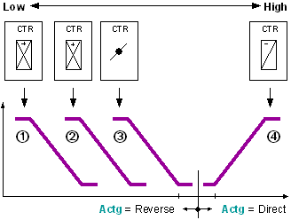
例如：组件 1 = 再热器、2 = 预热器、3 = 风门、4 = 冷却器
加热控制顺序：1 ---> 2 ---> 3。
冷却控制顺序：4 ---> ....
- The lowest sequence controller element corresponds to control sequence 1, the highest to control sequence n.
- The lowest sequence-controller element controls a reverse-acting component (if used)
Interconnecting sequence controller elements
有两种方法可以将 CAS_CTR 功能块与顺序控制器互连：
1. Direct interconnection
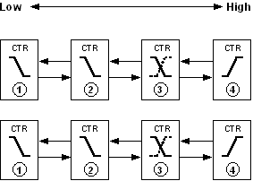
各个 CAS_CTR 功能块相互互连。
在引脚 [ToLower] 和 [FmHigher] 以及引脚 [FmLower] 和 [ToHigher] 之间进行互连。
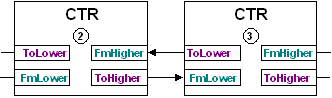
如果 PID_CTR 功能块位于同一图表上，则使用这种类型的互连。
2. Interconnection to SEQLINK
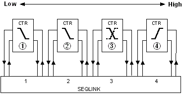
各个 PID_CTL 功能块通过 SEQLINK 块互连。
互连发生在功能块 CTR 的引脚和 SEQLINK 上的某个位置之间。 CTR 的序列必须与位置的顺序匹配。但是，SEQLINK 上可能有免费位置。多个 SEQLINKs 可以串联互连。

如果 CTR 功能块位于不同的图表上，或者各个顺序控制器元件或组件可能无法互连（CAS 库），则使用这种类型的互连。
序列元素必须根据互连进行参数化。
引脚 [ToLower] 和 [FmHigher]、[FmLower] 和 [ToHigher] 仅在顺序控制器上互连。
Parameterizing the sequence controller element' control action
设定的操作范围（例如加热、冷却）决定了顺序控制器元件的控制动作 [Actg] 的方向。运行期间可以切换控制动作方向（例如能量回收）。如果组件控制需要反转信号，控制器输出 [Yctr] 的反转 [Inv] 有助于解决此问题。
在顺序控制器中，控制动作的方向必须具有以下响应：
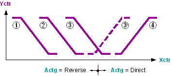
- The first or lowest sequence controller elements have reverse direction for control action [Actg] = Reverse.
- The first or highest sequence controller elements have direct direction of control action [Actg] = Direct.
- A sequence controller element with changing direction of control action (e.g. ERC) can only be in between.
MS___VAR_000__ 在映射列表 [MapList] 中搜索输入值 [In]，并在输出 [Out] 处发出相关值。如果未在映射列表 [MapList] 中输入输入值 [In]，则在输出 [Out] 处发出默认值 [DefVal]。
Parameterizing setpoints and an energy-free zone
在顺序控制器中，顺序控制器元件 (1...n) 的设定值 [Sp] 必须单调增加：
[Sp]1<= [Sp]2<= [Sp]3<= ... <= [Sp]n
如果具有相同控制作用方向的控制序列具有相同的设定点，则可以确保从一个控制序列转换到另一控制序列时的调节控制。
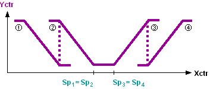
无能量区域由控制动作方向转换时的设定点（例如加热设定点、冷却设定点）定义。
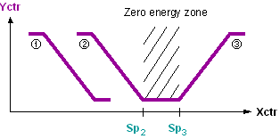